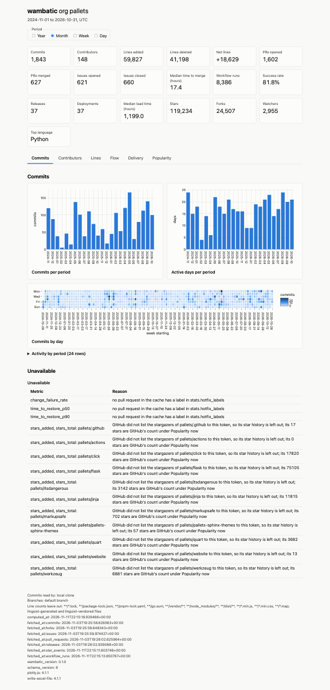
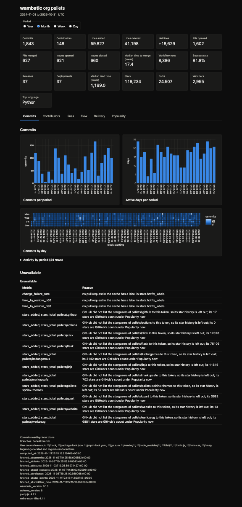
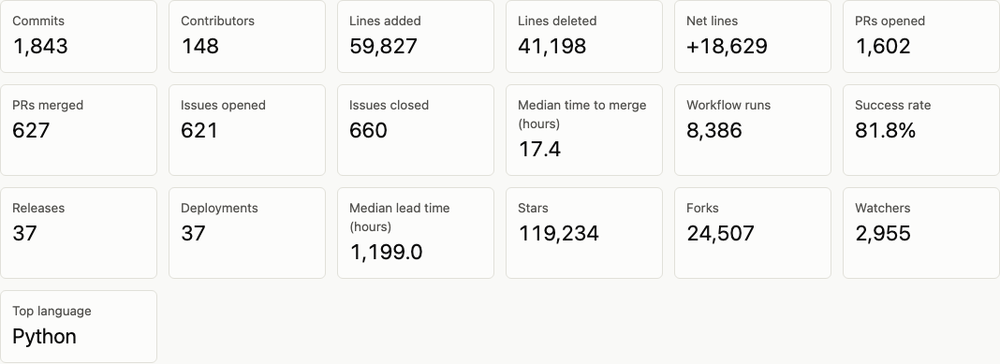
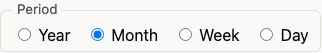
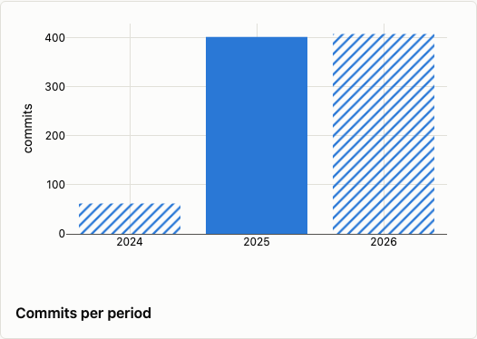
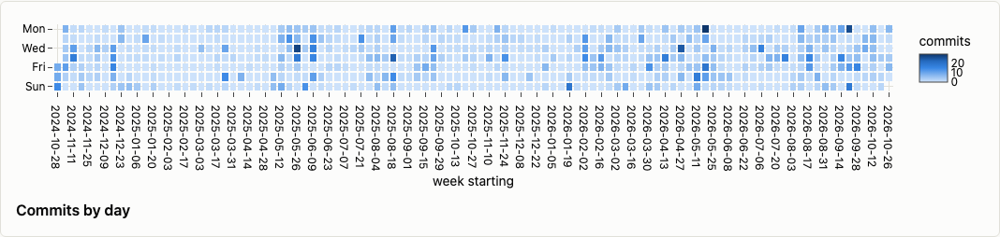
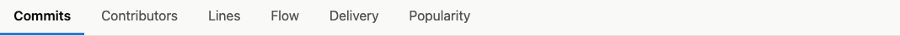
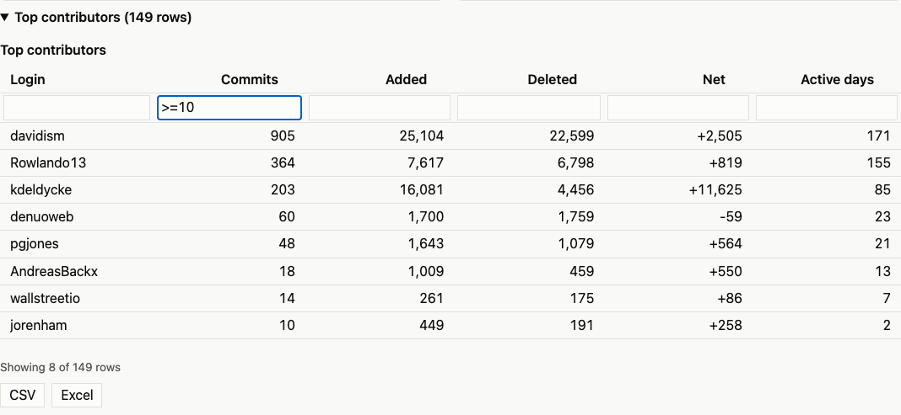

The HTML report¶
A tabbed web page with tiles, charts and tables, beside an assets folder, that opens from disk.
open "$(wambatic report org:pallets --format html)"
The command writes one page and an assets folder beside it, and prints the page's path on stdout, so a script can capture it. The page has summary tiles, then a tab for each section (commits, contributors, lines, flow, delivery and popularity, for the groups you asked for). The tabs hold a chart for each measure, whole-range charts (top contributors, by repository and by author, and the languages), a calendar of commits by day, and the same tables as the terminal report, which you can collapse, sort, filter and export.
Note
Screenshots captured on 2026-11-11 from pallets/click and org:pallets with wambatic 0.1.0, covering 2024-11-01 to 2026-10-31.
Light and dark¶
By default the page follows the viewer's light or dark setting and changes with it. Set
report.html_theme to light or dark to fix it; see Configuration.


The charts use one colour set for each theme and never rely on colour alone.
The tiles¶

The tiles show the totals for the whole range.
Switching period¶

The page has a Year, Month, Week and Day switch. It does not need the network, or wambatic, to change
the period: the page carries the data for every period. --by picks the period shown when the page
opens (default month). --by total is an error here, because the tiles already show the totals.
Partial periods¶

A period that the range cuts short is hatched in bar charts, drawn with open markers in line charts, and named in the chart's caption. See Periods and ranges.
The commit calendar¶

A calendar of commits by day, one cell for each day of the range.
Tabs¶

The tab bar sits under the tiles. Click a tab, or use the left and right arrow keys, Home and End. The
address of the page changes to name the tab (report.html#tab-flow), so you can send a link that opens on
that tab. The tab ids are tab-commits, tab-contributors, tab-lines, tab-flow, tab-delivery and
tab-popularity; a tab exists only for a group in the report. Without script, the tab bar is hidden and
every section shows one after another.
Tables¶
Every table is in a block you open and close by clicking its title. A table of more than ten rows starts closed, and its title says how many rows it holds.
- Sort: click a column heading; click again to reverse, and once more to restore the original order. Numbers sort as numbers, not as text.
- Filter: type in the box under a heading. A text column keeps rows that contain the text, ignoring
case. A number column takes
Nor=N(equal),>N,>=N,<N,<=N, orA..B(from A to B, inclusive). A number may have,separators and a%. A box that matches none of these forms is marked as invalid and filters nothing. Filters on several columns must all match. The line under the table saysShowing 37 of 412 rows, and the total row is markedTotal (all rows)while a filter is on, because it is not the total of the rows shown. - Export: the CSV and Excel buttons under the table save the rows that are shown (sorted and filtered
as you see them) with the headings. Numbers are written as numbers, and the CSV opens in Excel with
non-ASCII names intact. A text cell that starts with
=,+,-or@gets a leading'so a spreadsheet does not run it as a formula. A failed export shows one line and saves nothing.

Where the files go¶
--out PATHis a file, or an existing directory to write into. Without it the file goes inreport.out_dir.- The file is named
repo-OWNER-NAME.html,user-NAME.htmlororg-NAME.html. - The assets folder,
wambatic-assets-HASH, is written in the same directory. Its name carries a hash of its contents, so a newer wambatic adds a folder beside an old one and never changes it, and every page loads the files it was made with. Reports written into one directory share a folder. An existing folder is reused only when its files are exactly the ones this wambatic writes; one that differs (edited, or put there by someone else) stops the run withcannot write PATH: it exists and does not hold this version's files; remove it, and no page is written. - Missing directories are created and an existing file is replaced.
- The write is atomic: a failed write leaves the earlier file as it was, and no partial file. The folder is written first, so no page points at a folder that is missing.
--outis an error with another format.
Offline and shareable¶
The page and its folder hold their own copy of plotly.js and make no request, so they open from disk and can be hosted together, for instance on GitHub Pages. The folder is megabytes in size for that reason.
Keep the page beside its folder. To send a report, send both, or zip them together; attaching the page alone to an issue loses the charts, tabs and styles. A page opened without its folder says so at the top: "This report's files (wambatic-assets-HASH) did not load; keep the page beside that folder." The tiles and tables still show, unstyled.
Per-period charts show the total series only. The breakdown by repository and by author is for the whole range.
Related¶
- Delivery and DORA and Popularity for their charts.
- Recipes for a nightly report.
- The web app serves this same page.